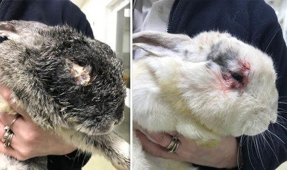
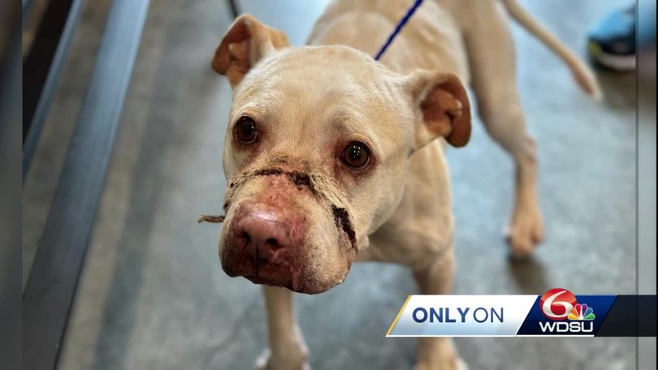
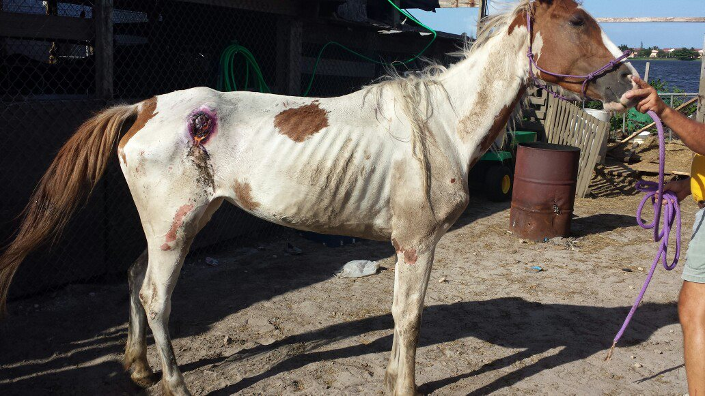
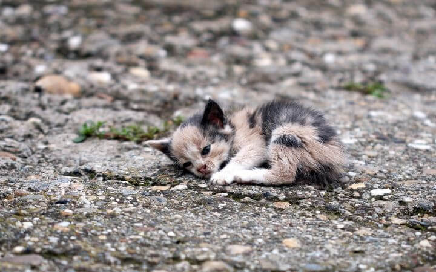
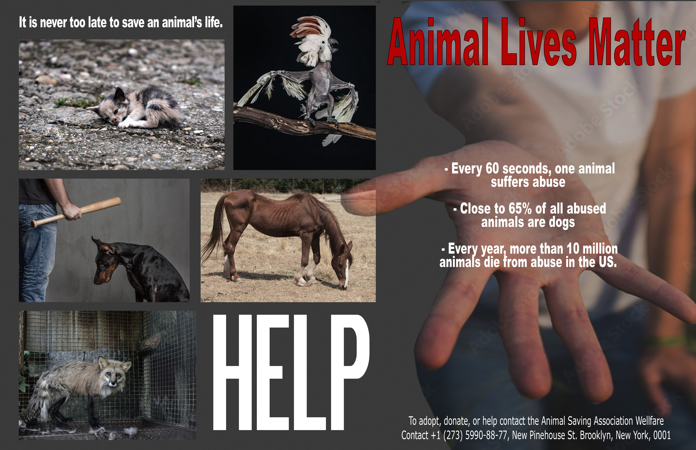

Young Jazz survives horrific abuse - RSPCA
Pet store bans rabbit sale Easter after rescuing abandoned pets | Express.co.uk
New Orleans dog extreme animal abuse rescued
starving horses - South Florida SPCA Horse Rescue
11 signs of animal cruelty and how you can help - pets for Patriots
Above, we have provided you with a few links on some horrific things that happen to animals. There are hundreds, if not thousands, incidents like these happening every day across the globe and in some countries it is much worse than we imagine. We want to raise awareness about this sensitive topic and to help, help as much as you can because every good deed counts. If we start the change within ourselves we'll be able to help others too. By looking at us other people will be inspired to help as well. We firmly believe abuse and cruelty is in no way acceptable. Our page is about loving and respecting every living creature.
Some things that are worth thinking of:
A heartwarming message made by me to promote animal protection and stand against cruelty.
Poster
A poster I have created about saving animals - animal abuse.
Podcast About Animal Welfare
An interesting podcast about a woman, Tracy Stewart, whose life centers on animal welfare. She runs a farm sanctuary with her husband and passionately advocates for and nurtures, rescued animals. Click anywhere on the image above to listen to it.
Organizations We Support:
Copyright © 2023 Isabelle Torab - All Rights Reserved